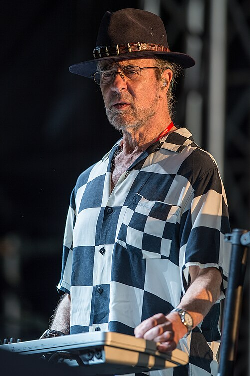

Manfred

Manfred Sepse Lubowitz[7] (born 21 October 1940), known professionally as Manfred Mann, is a South African-born musician, residing in the UK since 1961. He is best known as a founding member of the eponymous bands Manfred Mann, Manfred Mann Chapter Three and Manfred Mann's Earth Band.